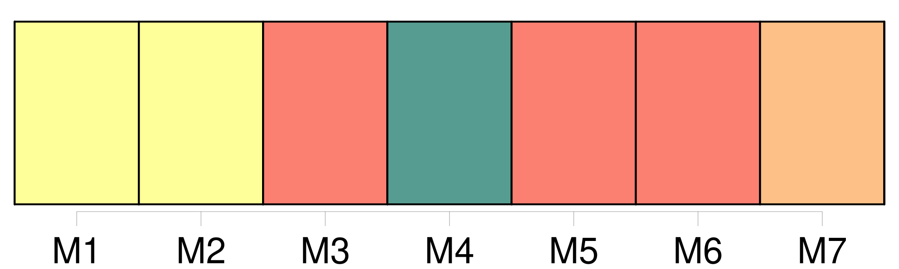

Longueur nb maillons : 44 mentions |
 |
Code civil [des français] [12 phrases]
Les lois concernant l'état et la capacité des personnes régissent [les Français] , même résidant en pays étranger. [17 phrases]
[Tout Français] jouira des droits civils. [1 phrases]
Tout individu né en France d'un étranger, pourra, dans l'année qui suivra l'époque de sa majorité, réclamer la qualité de [Français] ; pourvu que, dans le cas où il résiderait en France il déclare que son intention est d'y fixer son domicile, et que, dans le cas où il résiderait en pays étranger, il fasse sa soumission de fixer en France son domicile, et qu'il l'y établisse dans l'année, à compter de l'acte de soumission. [1 phrases]
Tout enfant né d' [un Français] en pays étranger est Français.
Tout enfant né, en pays étranger, d' [un Français] [qui] aurait perdu la qualité de [Français] , pourra toujours recouvrer cette qualité, en remplissant les formalités prescrites par l'article 9. [1 phrases]
L'étranger jouira en France des mêmes droits civils que ceux qui sont ou seront accordés [aux Français] par les traités de la nation à laquelle cet étranger appartiendra. [1 phrases]
L'étrangère qui aura épousé [un Français] suivra la condition de son mari. [3 phrases]
L'étranger, même non résidant en France, pourra être cité devant les tribunaux français, pour l'exécution des obligations par lui contractées en France avec [un Français] ; il pourra être traduit devant les tribunaux de France, pour les obligations par lui contractées en pays étranger envers [des Français] [1 phrases]
[Un Français] pourra être traduit devant un tribunal de France, pour des obligations par [lui] contractées en pays étranger, même avec un étranger. [5 phrases]
De la Privation des Droits civils par la perte de la qualité de [Français] [1 phrases]
La qualité de [Français] se perdra, 1 ° par la naturalisation acquise en pays étranger ; 2 ° par l'acceptation non autorisée par le Gouvernement, de fonctions publiques conférées par un gouvernement étranger ; 3 ° par l'affiliation à toute corporation étrangère qui exigera des distinctions de naissance ; 4 ° enfin, par tout établissement fait en pays étranger, sans esprit de retour. [2 phrases]
[Le Français] [qui] aura perdu sa qualité de [Français] , pourra toujours la recouvrer en rentrant en France avec l'autorisation du Gouvernement, et en déclarant qu' [il] veut s'y fixer, et qu' [il] renonce à toute distinction contraire à la loi française. [2 phrases]
Si elle devient veuve, elle recouvrera la qualité de [Française] , pourvu qu'elle réside en France, ou qu'elle y rentre avec l'autorisation du Gouvernement, et en déclarant qu'elle veut s'y fixer. [1 phrases]
Les individus qui recouvreront la qualité de [Français] , dans les cas prévus par les articles 10, 18 et 19, ne pourront s'en prévaloir qu'après avoir rempli les conditions qui leur sont imposées par ces articles, et seulement pour l'exercice des droits ouverts à leur profit depuis cette époque. [1 phrases]
[Le Français] [qui] , sans autorisation du Gouvernement, prendrait du service militaire chez l'étranger, ou s'affilierait à une corporation militaire étrangère, perdra sa qualité de [français]
[Il] ne pourra rentrer en France qu'avec la permission du Gouvernement, et recouvrer la qualité de [Français] qu'en remplissant les conditions imposées à l'étranger pour devenir citoyen ; le tout sans préjudice des peines prononcées par la foi criminelle contre [les Français] [qui] ont porté ou porteront les armes contre [leur] patrie. [75 phrases]
Tout acte de l'état civil [des Français] et des étrangers, fait en pays étranger, fera foi, s'il a été rédigé dans les formes usitées dans ledit pays. [1 phrases]
Tout acte de l'état civil [des Français] en pays étranger sera valable s'il a été reçu conformément aux lois françaises, par les agens diplomatiques, ou par les commissaires des relations commerciales de la République. [153 phrases]
Le domicile de [tout Français] quant à l'exercice de [ses] droits civils, est au lieu où [il] a [son] principal établissement. [1 phrases]
Le changement de domicile s'opérera par le fait d'une habitation réelle dans un autre lieu, joint à l'intention d'y fixer [son] principal établissement. [1 phrases]
La preuve de l'intention résultera d'une déclaration expresse, faite tant à la municipalité du lieu que l'on quittera, qu'à celle du lieu où on aura transféré [son] domicile. [167 phrases]
Le mariage contracté en pays étranger entre [Français] , et entre [Français] et étranger, sera valable s'il a été célébré dans les formes usitées dans le pays, pourvu qu'il ait été précédé des publications prescrites par l'article 63, au titre des Actes de l'état civil, et que [le Français] n'ait point contrevenu aux dispositions contenues au chapitre précédent. [1 phrases]
Dans les trois mois après le retour [du Français] sur le territoire de la République, l'acte de célébration du mariage contracté en pays étranger, sera transcrit sur le registre public des mariages du lieu de [son] domicile. |
|
Il est possible de télécharger la ressource sur la page Ortolang |
Si vous avez des questions ou vous voyez des erreurs, merci d'envoyer un mail à silvia.federzoni89@gmail.com |